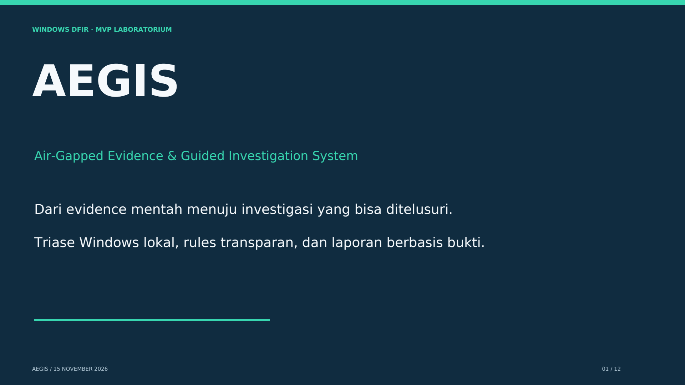
Teks slide 1
Dari evidence mentah menuju investigasi yang bisa ditelusuri.
Triase Windows lokal, rules transparan, dan laporan berbasis bukti.
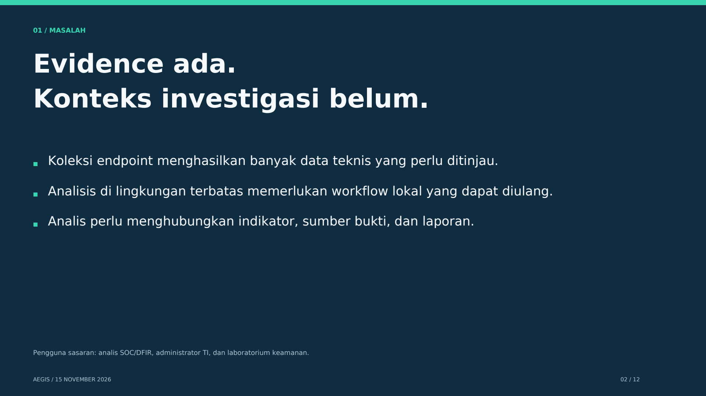
Teks slide 2
Koleksi endpoint menghasilkan banyak data teknis yang perlu ditinjau.
Analisis di lingkungan terbatas memerlukan workflow lokal yang dapat diulang.
Analis perlu menghubungkan indikator, sumber bukti, dan laporan.
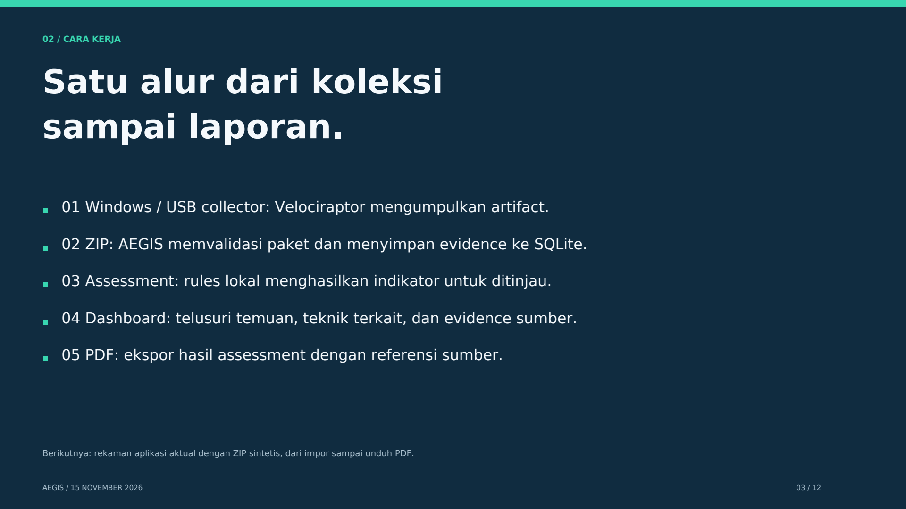
Teks slide 3
01 Windows / USB collector: Velociraptor mengumpulkan artifact.
02 ZIP: AEGIS memvalidasi paket dan menyimpan evidence ke SQLite.
03 Assessment: rules lokal menghasilkan indikator untuk ditinjau.
04 Dashboard: telusuri temuan, teknik terkait, dan evidence sumber.
05 PDF: ekspor hasil assessment dengan referensi sumber.
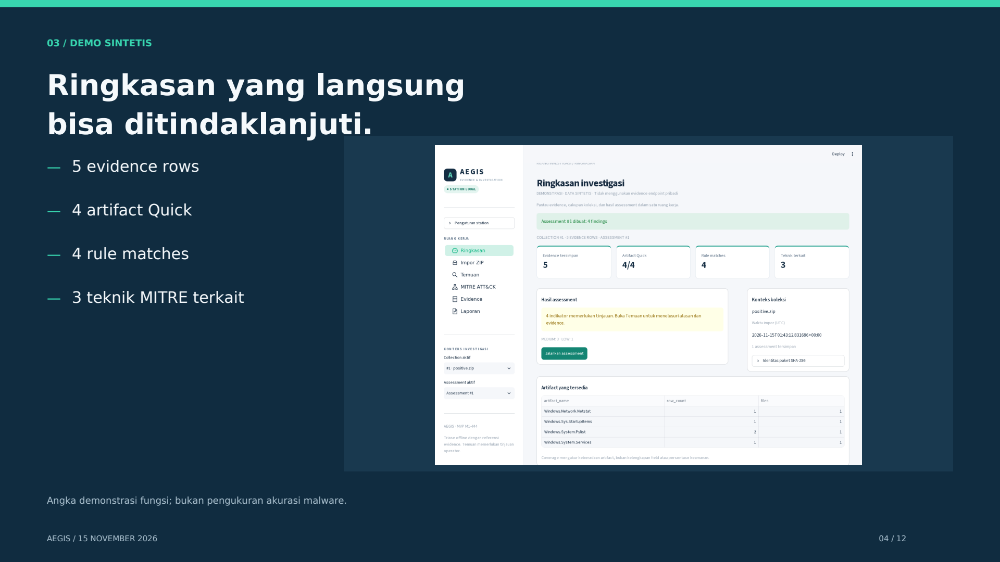
Teks slide 4
5 evidence rows
4 artifact Quick
4 rule matches
3 teknik MITRE terkait
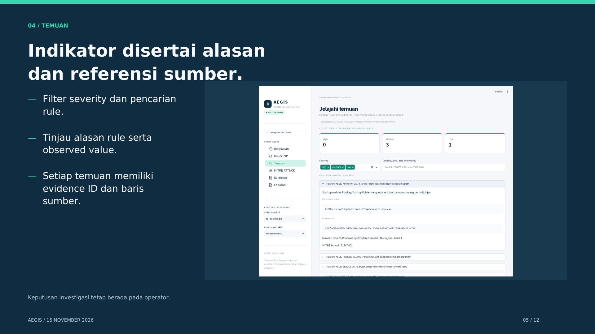
Teks slide 5
Filter severity dan pencarian rule.
Tinjau alasan rule serta observed value.
Setiap temuan memiliki evidence ID dan baris sumber.
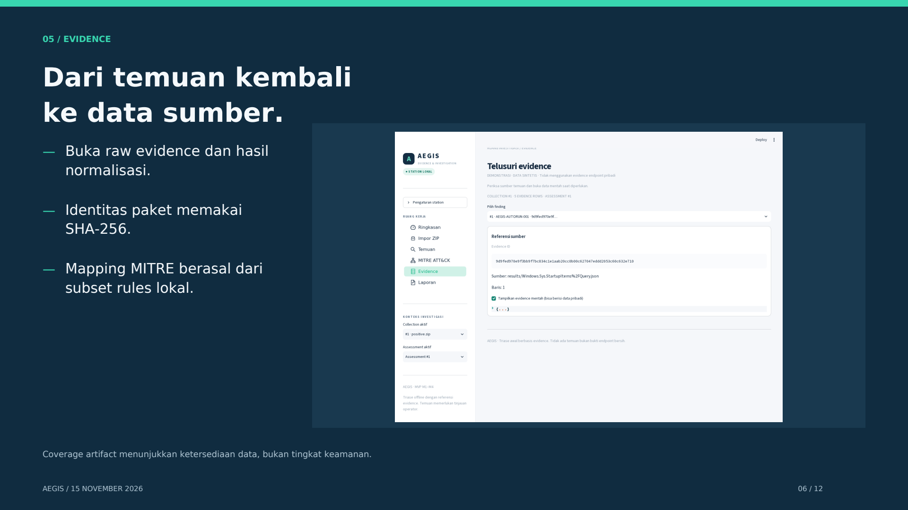
Teks slide 6
Buka raw evidence dan hasil normalisasi.
Identitas paket memakai SHA-256.
Mapping MITRE berasal dari subset rules lokal.
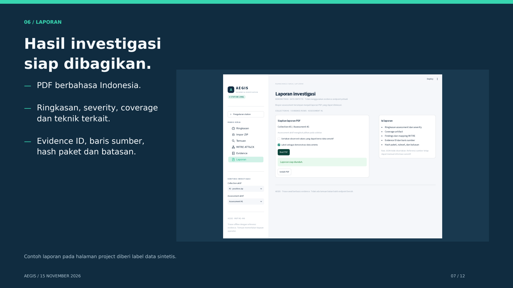
Teks slide 7
PDF berbahasa Indonesia.
Ringkasan, severity, coverage dan teknik terkait.
Evidence ID, baris sumber, hash paket dan batasan.
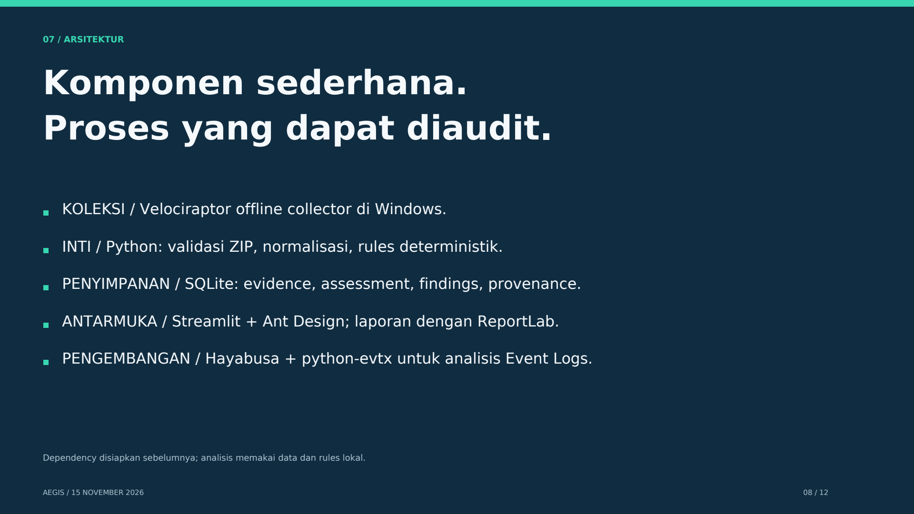
Teks slide 8
KOLEKSI / Velociraptor offline collector di Windows.
INTI / Python: validasi ZIP, normalisasi, rules deterministik.
PENYIMPANAN / SQLite: evidence, assessment, findings, provenance.
ANTARMUKA / Streamlit + Ant Design; laporan dengan ReportLab.
PENGEMBANGAN / Hayabusa + python-evtx untuk analisis Event Logs.
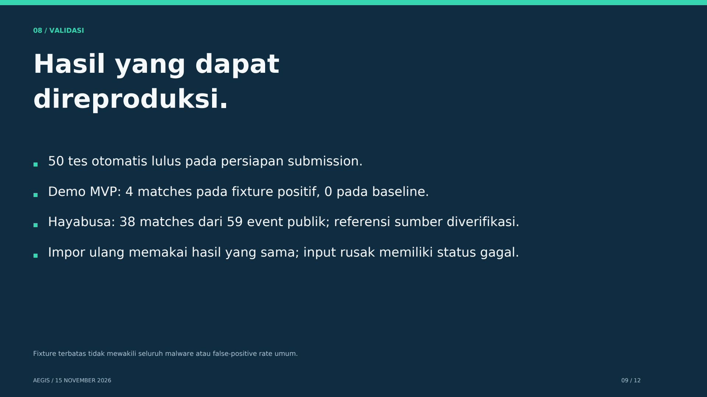
Teks slide 9
50 tes otomatis lulus pada persiapan submission.
Demo MVP: 4 matches pada fixture positif, 0 pada baseline.
Hayabusa: 38 matches dari 59 event publik; referensi sumber diverifikasi.
Impor ulang memakai hasil yang sama; input rusak memiliki status gagal.
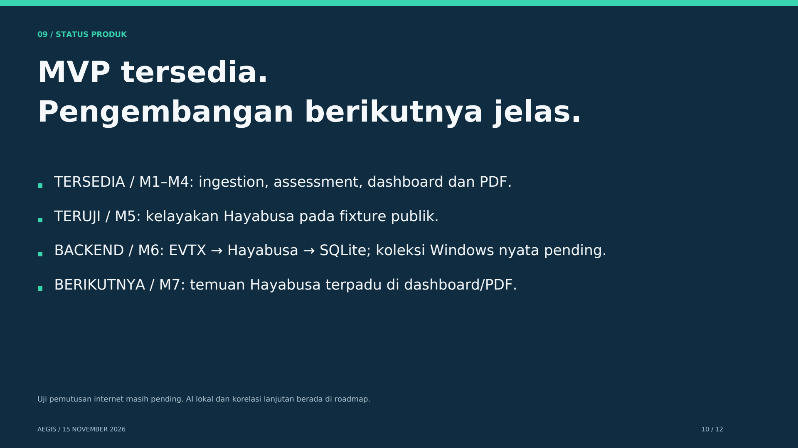
Teks slide 10
TERSEDIA / M1–M4: ingestion, assessment, dashboard dan PDF.
TERUJI / M5: kelayakan Hayabusa pada fixture publik.
BACKEND / M6: EVTX → Hayabusa → SQLite; koleksi Windows nyata pending.
BERIKUTNYA / M7: temuan Hayabusa terpadu di dashboard/PDF.
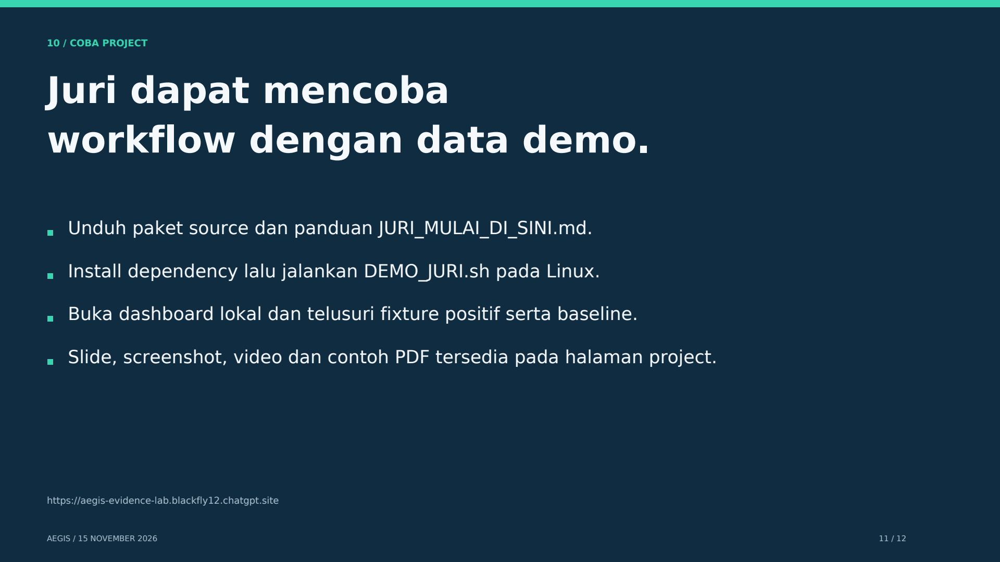
Teks slide 11
Unduh paket source dan panduan JURI_MULAI_DI_SINI.md.
Install dependency lalu jalankan DEMO_JURI.sh pada Linux.
Buka dashboard lokal dan telusuri fixture positif serta baseline.
Slide, screenshot, video dan contoh PDF tersedia pada halaman project.
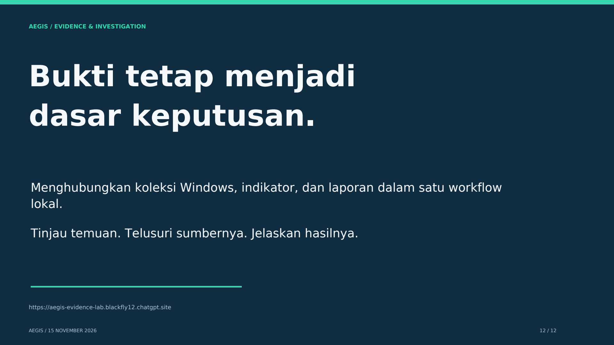
Teks slide 12
Menghubungkan koleksi Windows, indikator, dan laporan dalam satu workflow lokal.
Tinjau temuan. Telusuri sumbernya. Jelaskan hasilnya.